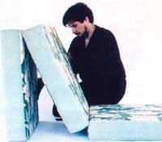
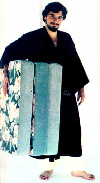

Making portable, attractive furniture is easy... using this Orient-inspired design.
You can sleep on it, lounge on it, read on it, exercise on it, and dream on it... in fact, the uses of the versatile mattress pictured here are practically endless! Furthermore, this compact piece of furniture (which is modeled after the traditional Oriental sleeping mat) is so lightweight that it can be (easily) carried almost anywhere. Just follow the instructions in this article, and-after a few hours of work-you'll have your very own futon... to use in the bedroom, in the living room, on the patio, oreven on camping trips.
For centuries, the customary Japanese interior design style has remained ultrasimple: A typical Oriental home is sparsely furnished, giving each room a low profile and an uncluttered atmosphere. The few pieces of furniture that are used are nearly always movable ones. For example, many Easterners create a simple, practical bed by first covering the floor with tatami, or woven mats of rice straw ... and then placing a soft mattress of cotton batting called a shikifuton -or underquilton top of that resilient base. (The cover for each bed is called a kakefuton, or overquilt.) The whole assembly can be rolled up easily and stored in a large cabinet during the day.
Well, that ancient design is the basis for an updated version of the shikituton (which is sometimes spelled shikibuton ). The modern convertible unit consists of three foam blocks that are covered with fabric and fastened together by cloth "hinges". Because of its unusual construction, this futon can be folded up to serve as an ottoman or chair ... or spread out flat for use as a comfortable pallet.
In order to construct the multipurpose sleeper, you'll need three foam rubber blocks, each 27" X 30" and 4" or 5" thick. You can probably pick up appropriately sized cushions at an upholstery store-or purchase them through the Sears catalog or some other mail order company-but you'll save money if you buy them directly from the manufacturer (check the Yellow Pages to see whether there's a factory outlet near you). Depending on their thickness ( and on where you buy them), the three cushions will probably cost between $20 and $30.
For the futon's covering, you'll need 7 yards of 36" (or 5-1/2 yards of 45") fabric. Choose a colorful, firmly woven, heavy cloth such as cotton duck, corduroy, or denim. Such materials, of course, can be found just about anywhere ... but if you're willing to scrounge a little, you may well locate some great bargains. For instance, I bought upholstery mill ends on sale, at my favorite fabric store, for less than a dollar a yard!
Start the construction of your homemade futon by spreading out the fabric in a single thickness and cutting each piece very carefully, especially if your material has a directional pattern or nap. (You might even want to make, and label, some tissue cutting guides, similar to the ones that are included with sewing patterns.)
To make an adult-size shikifuton, you'll need two long rectangular panels (each 31" X 55"), two short panels (each 28" X 31"), six side strips (each 6" X 28"), six end strips (each 6" X 31"), and a couple of 1-1/2" X 31" hinge strips. (These dimensions allow for seams of half an inch all around.) I used 5"-thick foam ... if yours is thicker or thinner, you'll need to adjust the width of your side and end strips accordingly.
Each long panel of fabric will cover one side of the center cushion and one side of an adjoining end cushion, in an overlapping arrangement (as shown in the diagram) ... while each of the two shorter panels will complete the other surface of one end cushion. To make a sturdy, well-constructed futon, it's a good idea-as you sew the pieces together-to reinforce the closures by backstitching at both ends of every seam.
Your first "stitchery" step will be to make the two open "boxes" that will become the covers for the end cushions. Each of those sections uses one short panel, two side strips, and two end strips. Placing the right sides of the two lengths of cloth together, sew a side strip to each 28" edge of the panel ... stitching only up to 1/2 inch from the ends of each seam. Press both seams closed onto the panel (it's best to press every seam as you finish it). Next (with right sides together again), sew an end strip to each 31" side of the panel, once more leaving a 1/2-inch opening at each corner.
Use the 1/2" allowances to close the box's corners by joining adjacent side and end strips (always with right sides together), while leaving 1/2 inch open at the "free" end of each seam ... and then trim away the excess material at the four corners with a pair of pinking shears. Repeat this whole procedure for the other box, and set aside the two partially completed end-cushion "jackets".
Next, you'll prepare the two longer fabric panels, which will cover the center cushion. Take one 31" X 55" rectangle, fold it in half across its width, press the fold line with a warm iron, and lay the piece out flat. Next, press a hinge strip in half (lengthwise), open it, and lay it flat overthe crease on the long panel, with the wrong sides of the fabric together.
Hand-baste that narrow strip onto the larger piece, along the matched fold lines, and then stitch it-parallel to the center line and 1/8 inch to each side-before pulling out the basting thread. Once it's securely attached, this small strip will reinforce the futon's cloth hinges. At the centerline-which should be midway between the two permanent lines you've just stitched-clip (through both pieces of fabric) a half-inch cut on each end.
Repeat the entire procedure to attach the other hinge strip to the second long panel.
Next, take one of the two remaining end strips, and-with right sides together-stitch that piece directly to one edge of the hinge strip that's already in place. Sew this seam as close as you can to the line of stitching on one side of the centerfold (and remember to leave 1/2 inch open at each end).
After fastening the last end strip to the other long panel in the same way, you should have only two side strips left ... which will both be attached to the same long panel (directly across from each other, as shown in the drawing). With the right sides together, sew each one to a side of the panel by starting 1/2 inch from the free end and stitching right up to the hinge in the center. Press the seams closed, and box the two corners by joining the side strips to the end strip that's stitched to the hinge piece ... again leaving the 1/2-inch leeway at the end of the seams. Trim the excess fabric from those corners, and you'll have a partially finished long panel, with two side strips attached to the end strip at its foldable center.
So far, so good. Now, take this same panel and attach one of the partially completed end covers to it: With right sides facing, stitch one of the longer (end) strips of the end cushion to the unused edge of the hinge strip (again leaving 1/2 inch open at each end of the seam). To assure that you wind up with a workable hinge, try to run this seam close to the remaining line of stitching that fastens the hinge strip to the panel.
Use the same procedure to join the other end cushion to its panel. Go on attaching each end-cushion cover to its long panel by stitching-with right sides together-along the free end and one of the two sides. (You'll need to leave the other side open for inserting the foam rubber block.) To sew up the side, start 1/2 inch from the free end of the piece ... and stitch right up to the reinforcement seam on the hinge strip. This is often a rather bulky area, so you might want to pin the rest of the fabric out of the way while you work.
Once you have attached both end covers to their center panels, you're almost done! To put the futon together, take the long panel that still has a free end strip attached to its center hinge section and-with right sides facing-stitch that strip to the free end of the center cushion on the other long panel. (Remember to leave 1/2-inch openings, as usual, at the ends of the seam,) Box in the two corners you just created ... and finish attaching the cushion to the other panel by sewing, with right sides together, along one side and across the remaining end. (This once again will leave one side open for inserting the foam stuffing.)
Carefully trim the seams in bulky areas and corners, turn the whole thing right side out, and you'll be ready at last to work the foam blocks into their sleeves. Since the spongy material tends to drag against most fabrics, you can make the process easier by wrapping each cushion in a length of lightweight nylon or some other slippery material. The foam should then slide more easily into the cloth covers, and you can pull out the wrapping after the block is properly positioned. Finally, hand-stitch the three side seams closed ... and your handsome foldable futon is complete.
Congratulations ... you are now the proud owner of a compact unit that's actually several comfortable pieces of furniture in one. No doubt you'll find a use for your Oriental mat in every room of the house, and you can even design a smaller version for the children to use. Of course, the notion of a portable bed has been around for centuries ... and the modernized shikifuton I've described here translates that ancient idea into an attractive, economical way to help furnish your home in style!
|
 PHOTOS BY THE AUTHOR You can stitch up this modern version of a traditinal Oriental sleeping mat in a few hours. Its' made from three foam cushions (covered in heavy fabric ""jackets"") which have cloth hinges that allow the pillows to be folded on top of each other |
A foldable shikifuton provides comfortable, simple seating. |
 Take a futon for a walk! The lightweight mat is easy to carry along with you for visiting overnight, camping, or just lunging in the back yard. |
|
When it's fully extended, the mattress can serve as a convenient pallet or exercise mat. |
|
|